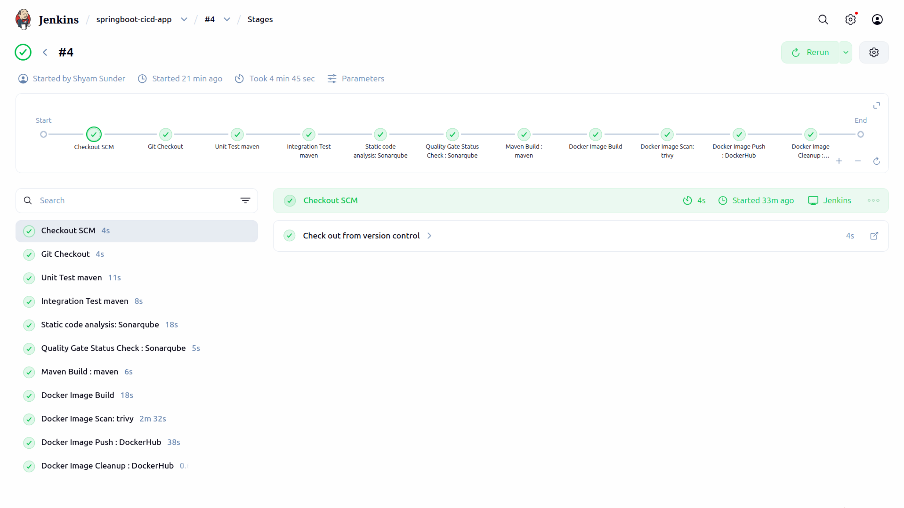
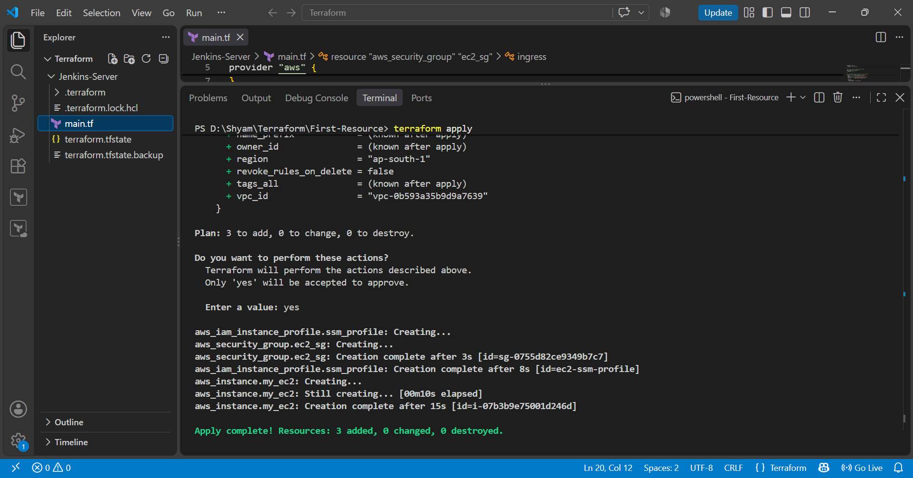
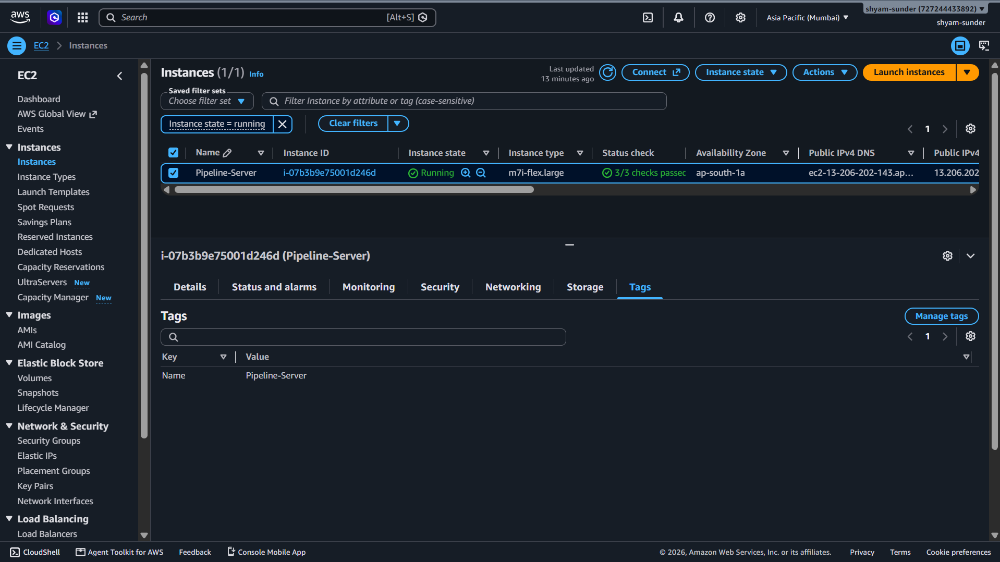
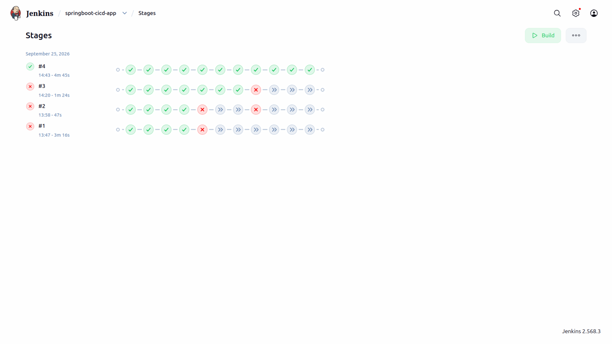
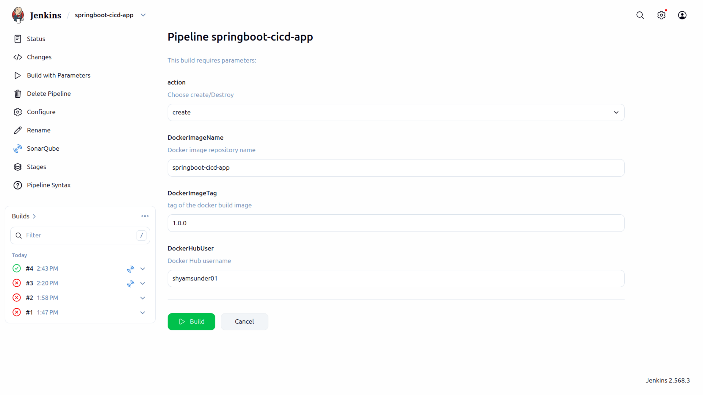
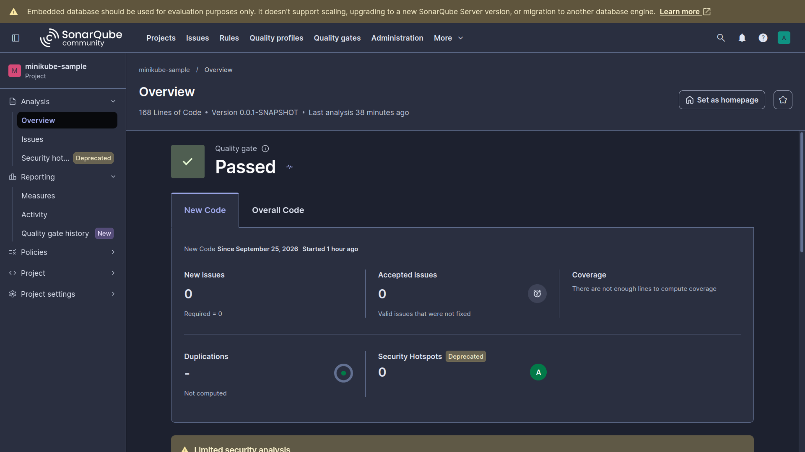
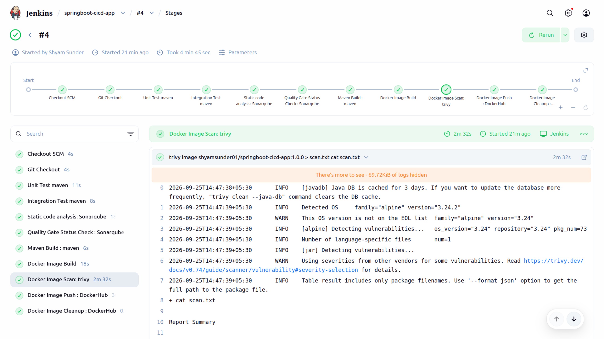
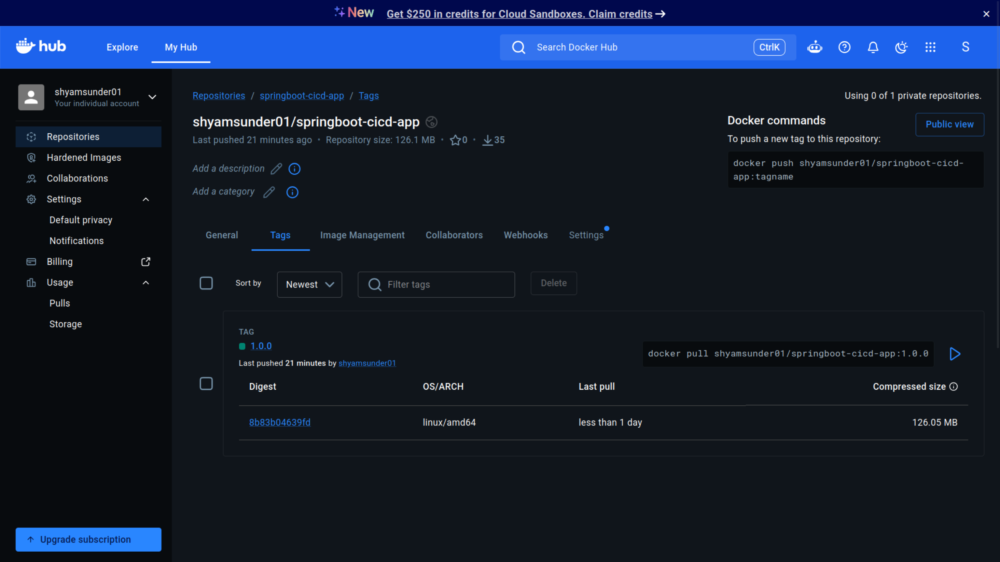
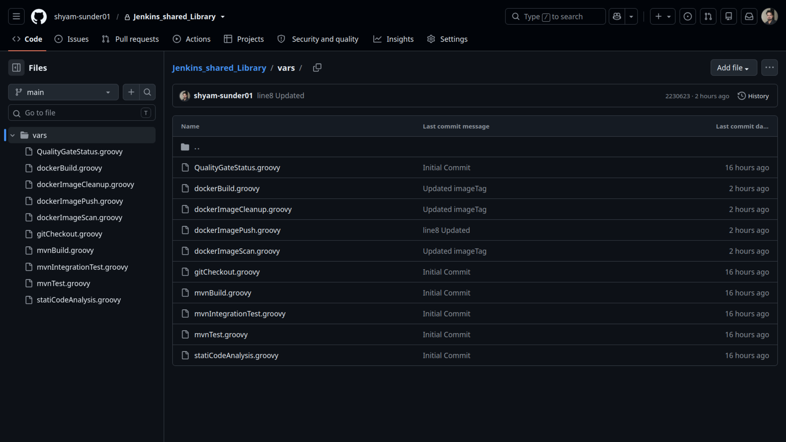
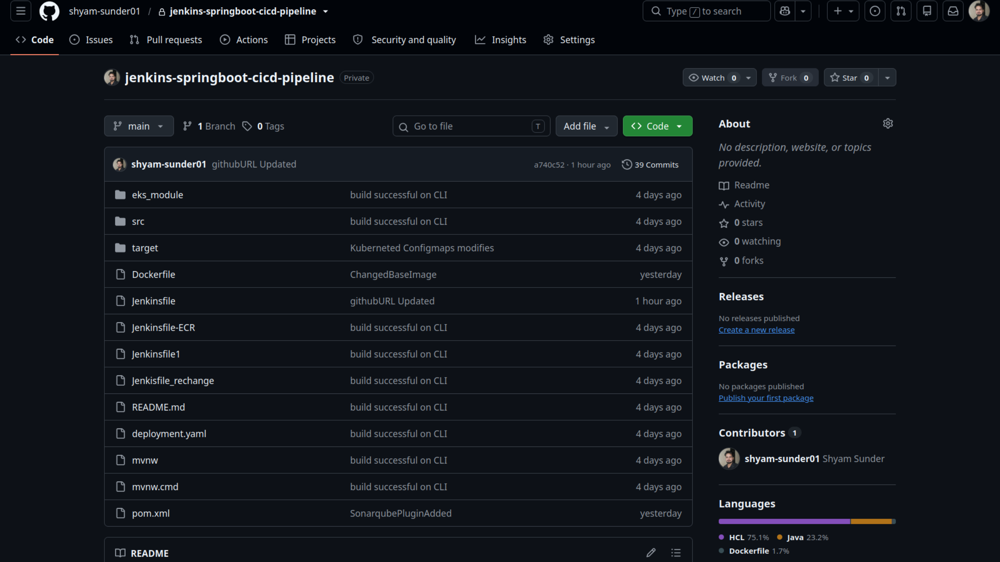

Personal Project
End-to-End Jenkins CI/CD Pipeline
Designed and implemented an end-to-end CI/CD pipeline for a Spring Boot application using Jenkins, Maven, SonarQube, Docker, Trivy and Docker Hub, with the Jenkins infrastructure provisioned on AWS EC2 using Terraform.
Overview
Project Objective
The goal of this project was to build a complete automated CI/CD workflow for a Java Spring Boot application. The pipeline integrates source-code management, automated testing, static code analysis, quality validation, containerization, security scanning and container image publishing.
Jenkins was deployed on an AWS EC2 instance provisioned using Terraform. GitHub was integrated with Jenkins using SSH authentication, while Jenkins Shared Library functions were used to make common pipeline operations reusable.
Technology Stack
Tools & Technologies
CI/CD Workflow
End-to-End Pipeline

Complete CI/CD workflow showing the major Jenkins pipeline stages.
Infrastructure as Code
Jenkins Infrastructure with Terraform
The Jenkins server infrastructure was provisioned on AWS using Terraform. This provided a repeatable Infrastructure as Code approach for creating the environment required to run the CI/CD pipeline.
The Terraform configuration provisions the required AWS resources and creates the EC2 instance used as the Jenkins server.


Jenkins
Automated Pipeline Execution
The Jenkins pipeline follows a declarative CI/CD approach and automates the complete application validation and container publishing workflow.
The pipeline includes source-code checkout, unit testing, integration testing, SonarQube analysis, Quality Gate validation, Maven packaging, Docker image creation, Trivy security scanning, Docker Hub publishing and image cleanup.

Pipeline Parameters
Parameterized Jenkins Build
The pipeline supports build-time parameters for controlling container image information. This allows the Docker Hub username, image name and image tag to be supplied when triggering a build.

Build & Validation
Automated Testing with Maven
Maven is used to manage the Spring Boot application build lifecycle. The pipeline executes automated unit tests and integration tests before proceeding with the application packaging and containerization stages.
Code Quality
SonarQube Analysis & Quality Gate
SonarQube is integrated into the Maven build process to perform static code analysis. The pipeline then waits for the SonarQube Quality Gate result before continuing with the downstream containerization stages.
This provides an automated quality checkpoint inside the CI/CD workflow rather than treating code analysis as a separate manual activity.

Containerization
Docker Image Creation
After successful testing and quality validation, the Spring Boot application is packaged into a Docker image. The Jenkins pipeline builds the image using the generated application JAR and prepares it for security scanning and publishing.
Container Security
Docker Image Vulnerability Scanning
Trivy is integrated into the pipeline to scan the generated Docker image for known vulnerabilities before the image is published to Docker Hub.
This places container security directly into the CI/CD workflow and provides an additional validation step before publishing the image.

Container Registry
Docker Hub Publishing
After the Docker image passes the required pipeline stages, Jenkins authenticates to Docker Hub using Jenkins-managed credentials and publishes the image to the configured repository.
Credentials are managed through Jenkins Credentials rather than being stored directly in the pipeline source code.

Pipeline Reusability
Jenkins Shared Library
A Jenkins Shared Library was implemented to move reusable CI/CD operations outside the main Jenkinsfile. This allows common pipeline activities to be organized into reusable functions instead of duplicating pipeline logic.
The shared functions cover operations such as Git checkout, Maven testing, SonarQube analysis, Quality Gate validation, Maven builds, Docker image creation, Trivy scanning and Docker image cleanup.

Source Code
GitHub Repository
The complete project source code, Jenkins pipeline configuration, Maven configuration, Dockerfile and application source are maintained in the GitHub repository.

Engineering Concepts
What This Project Demonstrates
CI/CD Automation
Automated application validation, packaging, containerization and image publishing.
Infrastructure as Code
AWS infrastructure provisioned using Terraform instead of manual infrastructure creation.
Code Quality
SonarQube analysis and Quality Gate validation integrated directly into the pipeline.
Container Security
Docker images scanned with Trivy before publishing to the container registry.
Pipeline Reusability
Jenkins Shared Library functions used to organize reusable CI/CD operations.
Secure Credentials
GitHub, SonarQube and Docker Hub credentials managed through Jenkins credentials.
Key Takeaways
Engineering Learnings
This project provided hands-on experience designing and troubleshooting a complete CI/CD workflow rather than implementing individual pipeline stages in isolation.
- Designed declarative Jenkins pipelines for automated application delivery.
- Integrated GitHub with Jenkins using SSH-based authentication.
- Automated unit and integration testing with Maven.
- Integrated SonarQube analysis and Quality Gate validation into the pipeline.
- Built and scanned Docker images before publishing.
- Used Jenkins credentials for external service authentication.
- Applied Jenkins Shared Library concepts for reusable pipeline operations.
- Provisioned the Jenkins infrastructure using Terraform on AWS.
Future Improvements
Possible Enhancements
- Align the Docker runtime image with the application's Java 21 runtime.
- Parameterize Docker image tags instead of relying on a fixed tag.
- Add JaCoCo-based code coverage reporting.
- Further restrict the AWS security group for production-oriented deployment.
- Extend the pipeline with automated application deployment after successful image publishing.
End-to-End DevOps Automation
From Infrastructure Provisioning to Container Publishing
Terraform provisions the infrastructure, Jenkins orchestrates the delivery workflow, and automated quality and security checks validate the application before container publishing.